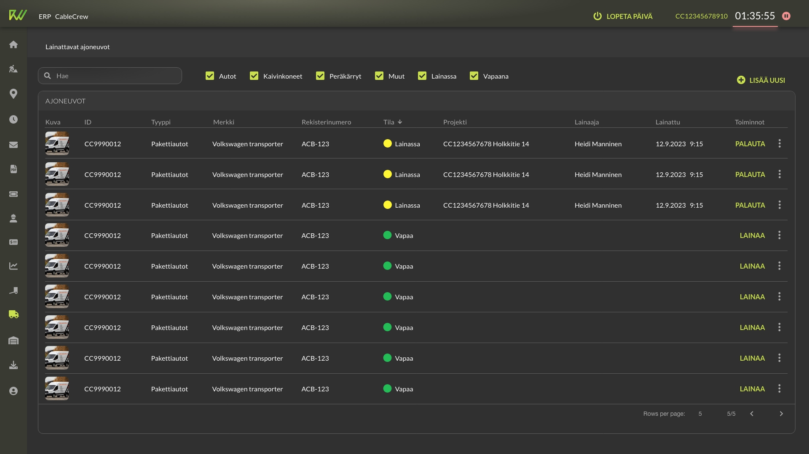

Evergrowing ERP
#B2B
#Cablecrew
What started over two years ago as a simple project for tracking working hours and capturing photos has evolved into a versatile platform with diverse features for various user needs. From drawing on satellite maps to creating documents, managing budgets, salary calculations, ticketing, ordering and delivering materials, and managing warehouse inventory—the platform now handles it all. With just 0.5 designers and 1.1 developers on the team, we've had to make inevitable compromises, but the results speak for themselves: a highly functional, multi-faceted solution built with limited resources.
Team
Designer
Architect / Developer
Project manager
My contribution
User interviews
User flows
Wireframes
UI + Visual design
Style guide
Accessibility
Prototype
Feedback survey
Research
The first thing of this project for me was to start mapping user flows for different jobs. In the beginning I worked based on the info I got from the project owners, but at some point I realised I needed to dig deeper and started to have user interviews of my own. I sat down with a plot work designer, logistics manager and warehouse manager. I asked questions about how they do their work, what things affect their work and what they needed to report onwards. These direct discussions with users helped a lot with understanding their needs, instead of relying only on secondhand info from project owners as they did not know and understand all the nuances of the work.
Wireframes and prototypes
One of the first features I designed was the timer for track working hours. It needed to be simple and fast to use. User could start the timer almost immediately when he/she opens the app. There’s a play button in the project card in the project list and if the user opens the project page, there’s big yellow Start working button. The timer stays visible in the top of the UI at all times. That way it can be seen and operated from any page as users need to pause it when having lunch.
Most of the sections of the ERP have tools for at least two different user types. The tools are different as users perform different tasks of the work (e.g. logistics). Each user type also have their preferred device for the work. I needed to make the design adaptive, so managers, that use desktop computers and tablets, and field workers, that prefer tablets and mobile phones, can use same features with tailored tools.
These screens are from logistics feature. The desktop view is for Logistics manager to maintain the vehicle inventory. Managers mostly work with computers as they need to handle big data sets and data tables. In this view Logistics manager can maintain the fleet of vehicles and see who has loaned them.

The mobile views are for those, that needs to loan vehicles on a daily basis. This task is done usually when already standing next to the vehicles where the mobile phone is most handy. The task needs to be done fast and easy, but as the minority of the users even needs this feature, it can’t be too intrusive in the UI.
Mobile prototype show the main screens of the loaning process. The flow begins with user starting his/hers day and activating the timer. That’s when we show a snackbar asking if he/she needs to loan some vehicles for the day. This way those that do not need vehicles can just continue their day and not bother with tapping any buttons. If they need to loan a vehicle, they can easily choose what they need.
The number of loaned vehicles are shown at top bar of the UI. When the user is done for the day and stops the timer, he/she can easily return the vehicles.
Outcomes and lessons learned
The ERP keeps still evolving and backlog is long. We constantly get requests for new features and fixes. Our company tries to be as agile as possible, so there’s not too much time to iterate the designs before development. What has been the most crucial lesson to learn is that the coding is done the fastest way possible and that means making compromises in relation to design. Of course we need to provide minimum viable product for customer at first. And maybe later we have time to go back and develop it further.
We hear from product owners that mostly the workers like the software and think it’s useful, even though they have many requests to fix or change things. To have better understanding of users thoughts, I decided to create a survey to ask how they feel about the usability of the UI. There were 200-300 potential persons get feedback from, but unfortunately I got only 18 answers. I suppose they were too busy with their work just weeks before Christmas. So the results are not statistically significant. These 18 users did think the usability was good though. Only questions about quality and coherency got lower scores. That was expected in my opinion, because everything is coded as fast as possible and that means compromises. This might be something we should give more attention to.